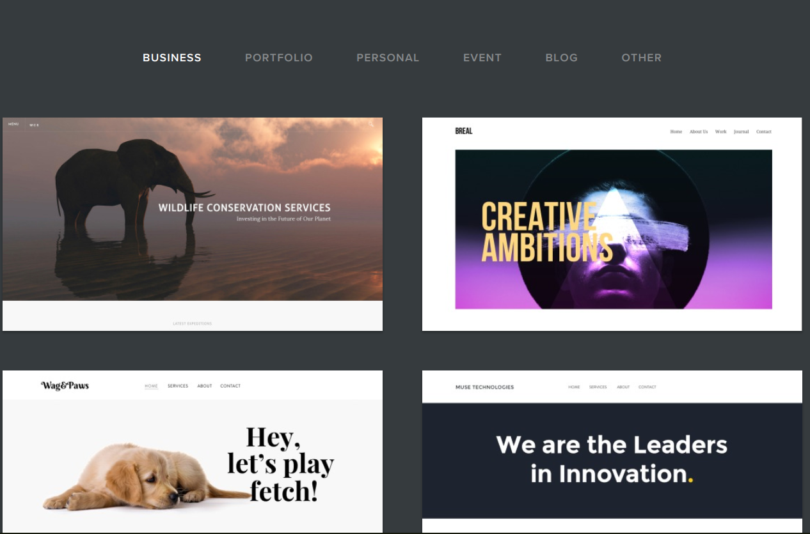
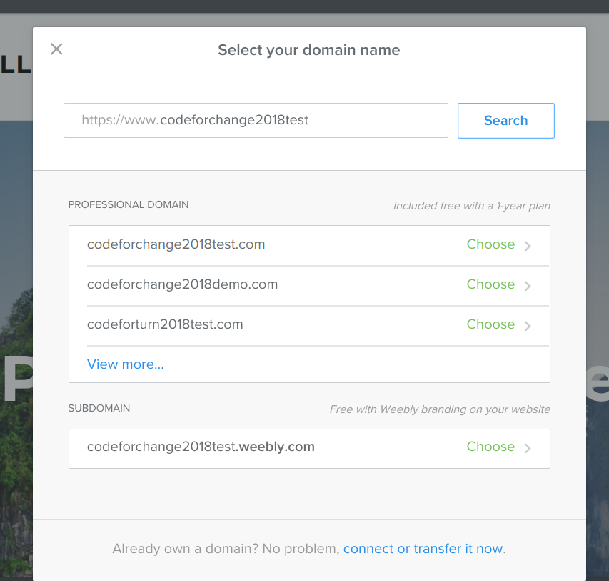

For this project, we're going to build out a Weebly website to communicate your Code for Change project. Click on the image below to see an example website:

1) To get started, let's create a Weebly account! Click "Create a Website."
Your email address should be first_name@mailinator.com (heather@mailinator.com). Your password will be "thecodingspace2018"
2) Select any theme you would like for your website.
3) Choose a name for your project. This will be your domain. Select the option that says "Subdomain."
4) Use any of the blocks in the "Build" section on the left to customize your website.
You need to include the following information:
-What UN Sustainable Development Goal you chose
-4 or 5 facts about the problem in the world or your community
-What your idea is
-How your idea will help change this problem
-What the next steps are for your project
-A button with a link to your Scratch or WoofJS game (if you did level 1)
-What UN Sustainable Development Goal you chose
-4 or 5 facts about the problem in the world or your community
-What your idea is
-How your idea will help change this problem
-What the next steps are for your project
-A button with a link to your Scratch or WoofJS game (if you did level 1)
5) In the top right corner, press the publish button to save and publish your page. Here's the URL to your website that is live!